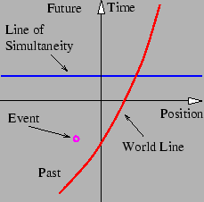
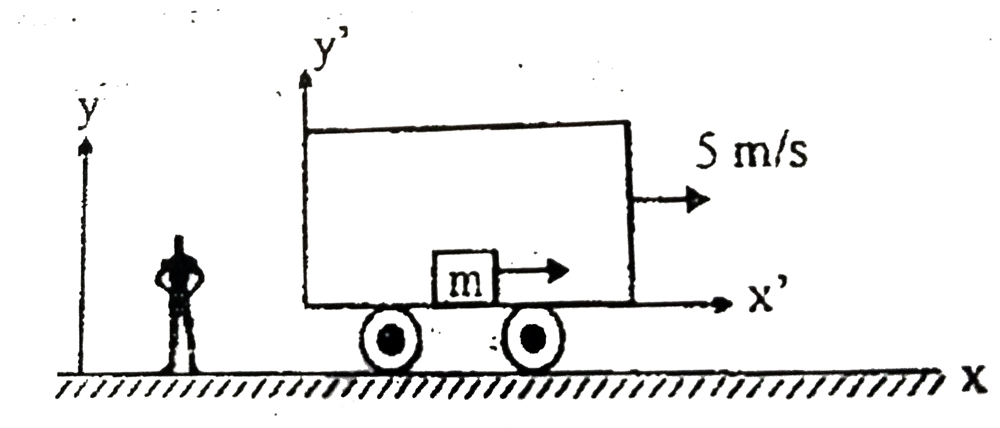
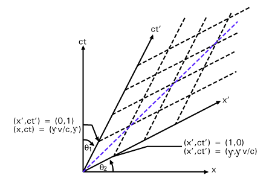
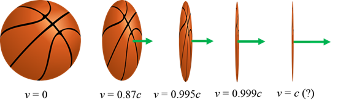
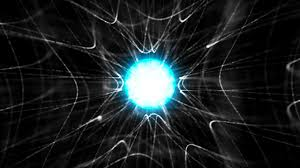

Definitions in Special Relativity
- Spacetime: the combination of the dimensions of space and time in one unified object.
- Event: a point in spacetime that corresponds to a specific location at a specific time.
- Worldline: the path that an object traces through spacetime as time passes.

Special Relativity Postulates
- Spacetime: the combination of the dimensions of space and time in one unified object.
- Event: a point in spacetime that corresponds to a specific location at a specific time.
- Worldline: the path that an object traces through spacetime as time passes.

Special relativity is based on two postulates:
- The laws of physics remain the same in all inertial reference frames.
- The speed of light is a law of physics.

A reference frame is just where you view the situation from. Standing on the ground is a reference frame, and so is standing on the inside of a moving train. Inertial means that the reference frame is moving at a constant speed, like if the train was not accelerating.
The Lorenz Transformation
The Lorenz transformation is a way to change reference frames. It takes in a vector, which can be an event or something that points along a worldline, and outputs how that vector looks from someone in a different reference frame.

Time Dilation and Length Contraction
Time dilation and length contraction are two effects specific to special relativity. Time dilation states that time slows down for moving objects, so moving clocks run slowly. Length contraction states that lengths become shorter for moving objects, so moving rods are short.

Relativity of Simultaneity
The Lorenz transformation is a way to change reference frames. It takes in a vector, which can be an event or something that points along a worldline, and outputs how that vector looks from someone in a different reference frame.

Time dilation and length contraction are two effects specific to special relativity. Time dilation states that time slows down for moving objects, so moving clocks run slowly. Length contraction states that lengths become shorter for moving objects, so moving rods are short.

Relativity of Simultaneity
In special relativity, events cannot objectively happen at the same time. If someone sees two events that they think happen at the same time, then someone moving would say that they occur at different times.
Velocity Addition
In regular physics, if someone moving at 5 meters per second throws a ball at 10 meters per second, the total velocity would be 15 meters per second. However, in special relativity velocities do not add, and the velocity will be slightly less than the addition of both velocities. This ensures that if a moving person shines a flashlight, the light won't travel faster than light.
General Relativity
General relativity is a theory of gravity that combines gravity and special relativity. It describes gravity as the curvature of spacetime around massive objects. A way to think about this is that massive objects bend the direction of time towards the object, and since things go forward in time, they go towards the object.

Black Holes
General relativity is a theory of gravity that combines gravity and special relativity. It describes gravity as the curvature of spacetime around massive objects. A way to think about this is that massive objects bend the direction of time towards the object, and since things go forward in time, they go towards the object.

Black holes are objects where the direction of time is bent so strongly that all objects that fall in cannot come out without going faster than light, which is impossible. Black holes often also rotate, and that causes a region outside the black hole called the ergosphere where all objects are forced to rotate with the black hole, but can still escape.